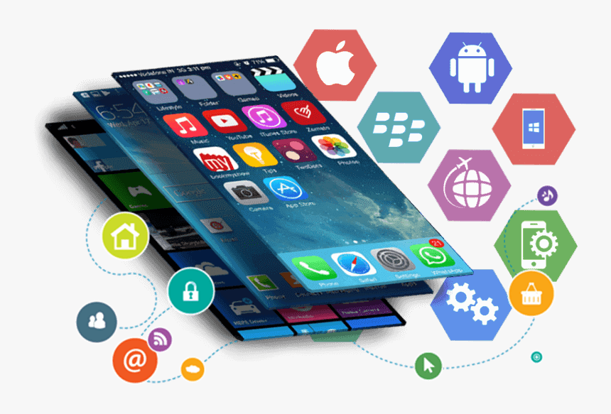

Réseaux Informatiques
Passionné par l'architecture des systèmes et la connectivité, je m'intéresse à la mise en place d'infrastructures robustes et sécurisées.
Découvrez les domaines technologiques qui me passionnent et dans lesquels je me perfectionne au quotidien.
Passionné par l'architecture des systèmes et la connectivité, je m'intéresse à la mise en place d'infrastructures robustes et sécurisées.

Le développement d'interfaces mobiles intuitives et performantes est au cœur de mes projets, avec un focus sur l'expérience utilisateur (UX).

De la conception visuelle au déploiement, j'aime créer des sites web modernes, responsives et optimisés pour tous les supports.

Maîtriser la structuration et la gestion des données est essentiel. Je travaille sur la modélisation SQL et l'optimisation des requêtes.